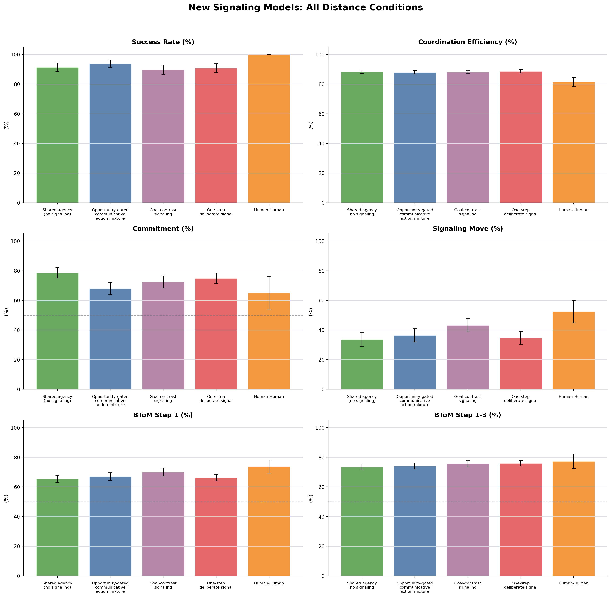
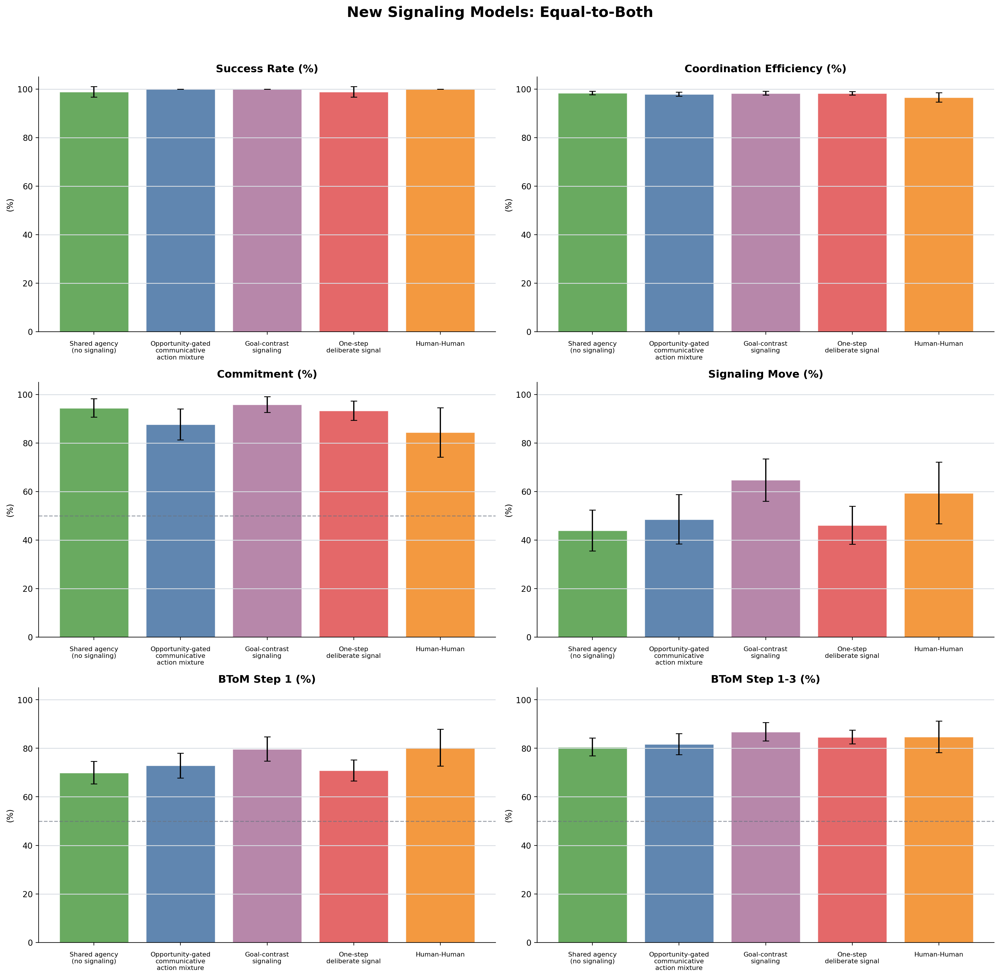
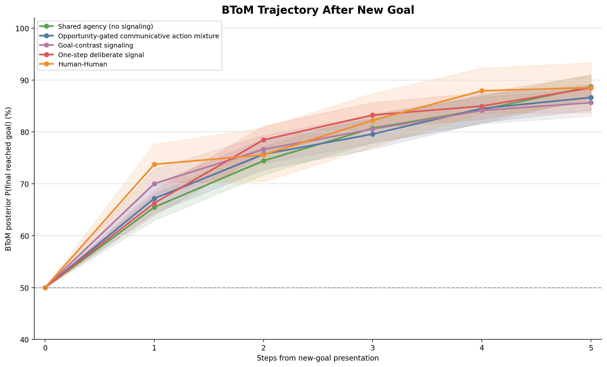
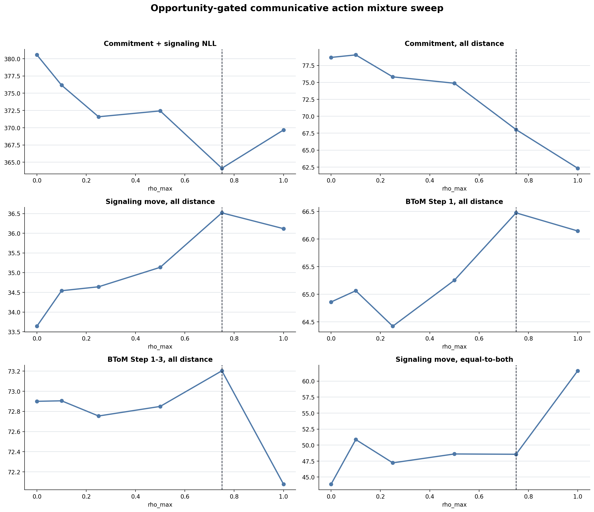
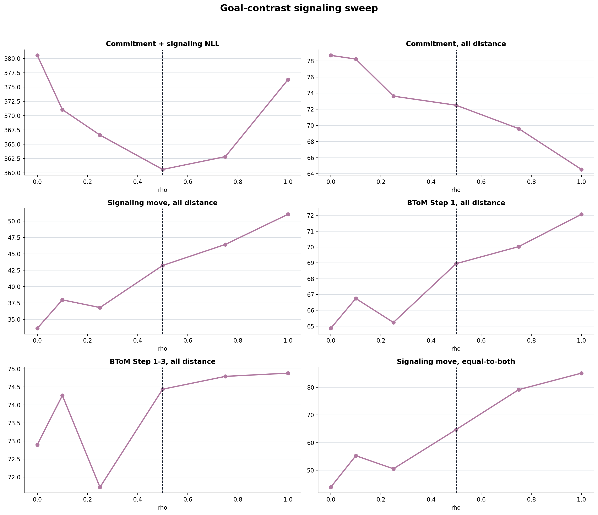
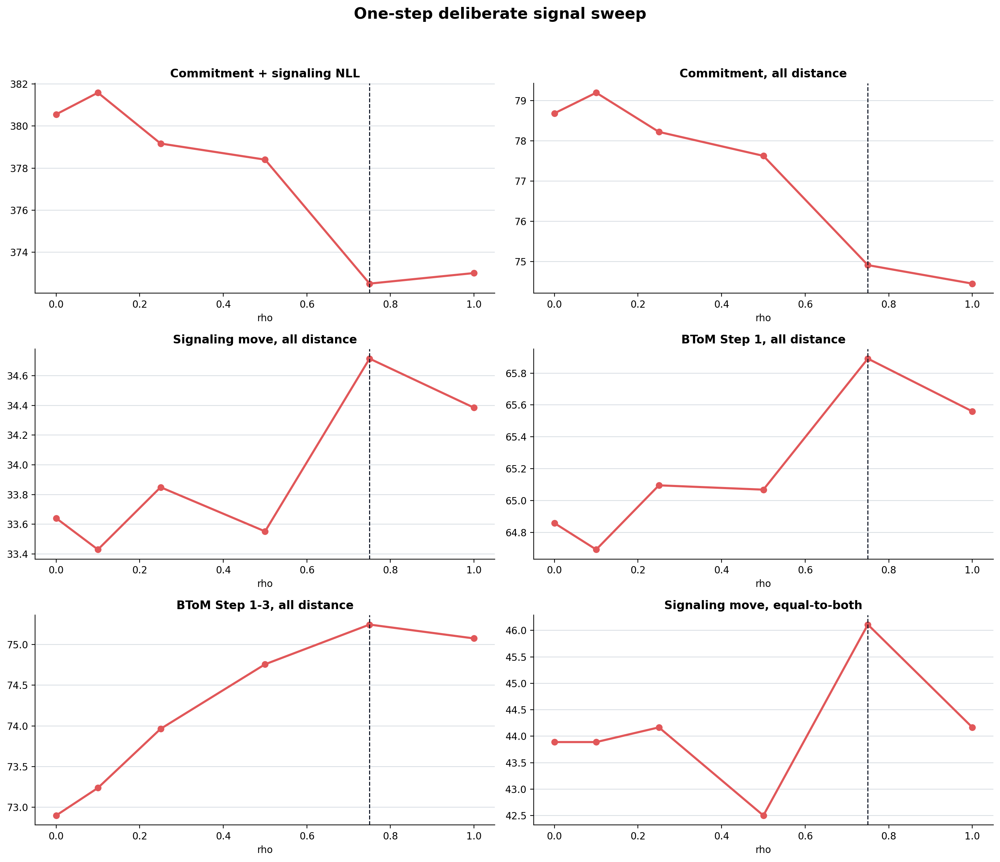

Selected Parameters
Each variant was selected by trial-level commitment + signaling binomial NLL against Human-Human, using the compact sweep values [0.0, 0.1, 0.25, 0.5, 0.75, 1.0].
| model | score | parameter | parameter_value | lambda | commitment_nll | signaling_nll | binomial_nll |
|---|---|---|---|---|---|---|---|
| Opportunity-gated communicative action mixture | opportunity_costly_mixture | rho_max | 0.75 | 0.20 | 173.795 | 190.330 | 364.125 |
| Goal-contrast signaling | goal_contrast | rho | 0.50 | 0.20 | 174.649 | 185.935 | 360.584 |
| One-step deliberate signal | one_step_deliberate | rho | 0.75 | 0.20 | 178.777 | 193.735 | 372.512 |
All Distance Conditions

Equal-to-Both

BToM Trajectory

Sweep Diagnostics



Summary Table
| condition_scope | group | Success Rate (%) | Coordination Efficiency (%) | Commitment (%) | Signaling Move (%) | BToM Step 1 (%) | BToM Step 1-3 (%) |
|---|---|---|---|---|---|---|---|
| average | Shared agency no signaling | 91.39 | 88.39 | 78.69 | 33.64 | 65.49 | 73.55 |
| average | Opportunity-gated communicative action mixture | 93.89 | 87.96 | 68.04 | 36.52 | 67.02 | 74.16 |
| average | Goal-contrast signaling | 89.72 | 88.20 | 72.50 | 43.23 | 70.03 | 75.73 |
| average | One-step deliberate signal | 90.83 | 88.67 | 74.91 | 34.72 | 66.27 | 75.99 |
| average | Human-Human | 100.00 | 81.58 | 64.97 | 52.53 | 73.75 | 77.26 |
| equal_to_both | Shared agency no signaling | 98.89 | 98.38 | 94.44 | 43.89 | 69.97 | 80.58 |
| equal_to_both | Opportunity-gated communicative action mixture | 100.00 | 97.96 | 87.64 | 48.56 | 72.91 | 81.71 |
| equal_to_both | Goal-contrast signaling | 100.00 | 98.34 | 95.83 | 64.72 | 79.75 | 86.81 |
| equal_to_both | One-step deliberate signal | 98.89 | 98.26 | 93.33 | 46.11 | 70.85 | 84.67 |
| equal_to_both | Human-Human | 100.00 | 96.64 | 84.38 | 59.38 | 80.28 | 84.79 |
Raw Sources
| model | score | parameter | parameter_value | raw_trials |
|---|---|---|---|---|
| Shared agency no signaling | costly_mixture | rho | 0.00 | /Users/chengshaozhe/Documents/DukeECClab/code/multiplePlayerGridGame_socketIO/dataAnalysis/raw_data/model_model_simulations/joint_rl/shared_agency_new_signaling_models_comparison/no_signaling/always_signal_vs_always_signal_2p3g_raw_trials_beta_3_lambda_0p2_alpha_0_score_costly_mixture_sessions_0_to_29.json.zst |
| Opportunity-gated communicative action mixture | opportunity_costly_mixture | rho_max | 0.75 | /Users/chengshaozhe/Documents/DukeECClab/code/multiplePlayerGridGame_socketIO/dataAnalysis/raw_data/model_model_simulations/joint_rl/shared_agency_new_signaling_models_comparison/opportunity_gated_costly_mixture_sweep/always_signal_vs_always_signal_2p3g_raw_trials_beta_3_lambda_0p2_alpha_0p75_score_opportunity_costly_mixture_sessions_0_to_29.json.zst |
| Goal-contrast signaling | goal_contrast | rho | 0.50 | /Users/chengshaozhe/Documents/DukeECClab/code/multiplePlayerGridGame_socketIO/dataAnalysis/raw_data/model_model_simulations/joint_rl/shared_agency_new_signaling_models_comparison/goal_contrast_sweep/always_signal_vs_always_signal_2p3g_raw_trials_beta_3_lambda_0p2_alpha_0p5_score_goal_contrast_sessions_0_to_29.json.zst |
| One-step deliberate signal | one_step_deliberate | rho | 0.75 | /Users/chengshaozhe/Documents/DukeECClab/code/multiplePlayerGridGame_socketIO/dataAnalysis/raw_data/model_model_simulations/joint_rl/shared_agency_new_signaling_models_comparison/one_step_deliberate_sweep/always_signal_vs_always_signal_2p3g_raw_trials_beta_3_lambda_0p2_alpha_0p75_score_one_step_deliberate_sessions_0_to_29.json.zst |